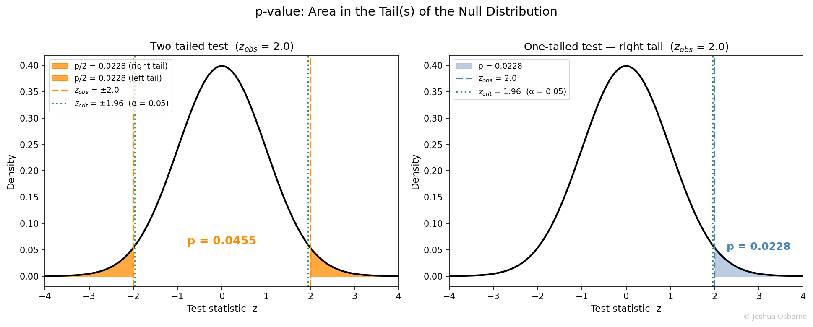

Statistics Notes
The probability of observing data at least this extreme under the null hypothesis.
Contents
A p-value is the probability of obtaining a test statistic at least as extreme as the one observed, assuming the null hypothesis is true.
Hypothesis testing requires a way to quantify how surprising the observed data is under a default assumption. A raw test-statistic (e.g., z = 2.1) is hard to interpret without knowing its null distribution. The p-value converts the test statistic into a probability on [0, 1], giving a standardized measure of how compatible the data is with \(H_0\). A small p-value means the data would rarely arise if \(H_0\) were true; a large p-value means the data is unremarkable under \(H_0\).
The p-value is the probability, computed under the null distribution, of observing a test statistic at least as extreme as the one actually obtained. For a one-tailed test, “at least as extreme” means in the direction of the alternative; for a two-tailed test, it means in either direction. We reject the null hypothesis when the p-value falls below the pre-specified significance level alpha.
| Symbol | Type | Meaning |
|---|---|---|
| \(H_0\) | statement | Null hypothesis |
| \(H_1\) | statement | Alternative hypothesis |
| \(T\) | random variable | Test statistic under \(H_0\) |
| \(t_{\text{obs}}\) | scalar | Observed value of the test statistic |
| \(p\) | scalar \(\in [0,1]\) | p-value |
| \(\alpha\) | scalar \(\in [0,1]\) | Pre-specified significance level |
| \(F_0\) | CDF | Null distribution of \(T\) |
| \(\Phi\) | CDF | Standard normal CDF |
| \(F_{n-1}\) | CDF | t-distribution CDF with \(n-1\) degrees of freedom |
| \(n\) | integer | Sample size |
| \(\bar{x}\) | scalar | Sample mean |
| \(\mu_0\) | scalar | Hypothesized population mean under \(H_0\) |
| \(\sigma\) | scalar | Population standard deviation (known) |
| \(s\) | scalar | Sample standard deviation (estimated from data) |
Step 1. Compute the test statistic from the data.
One-sample z-test (known \(\sigma\)):
\[z = \frac{\bar{x} - \mu_0}{\sigma / \sqrt{n}}\]
One-sample t-test (unknown \(\sigma\), use \(s\)):
\[t = \frac{\bar{x} - \mu_0}{s / \sqrt{n}}\]
Step 2. Evaluate the tail probability under the null distribution.
One-tailed p-value (right tail):
\[p = 1 - \Phi(z)\]
One-tailed p-value (left tail):
\[p = \Phi(z)\]
Two-tailed p-value (z-test):
\[p = 2\bigl(1 - \Phi(|z|)\bigr)\]
Two-tailed p-value (t-test, \(n - 1\) degrees of freedom):
\[p = 2\bigl(1 - F_{n-1}(|t|)\bigr)\]
Step 3. Compare to \(\alpha\). Reject \(H_0\) if \(p < \alpha\). The standard is \(\alpha=0.05\) or \(\alpha=0.01\)
A coin is flipped 100 times and 60 heads are observed. Test whether the coin is fair at \(\alpha = 0.05\).
Setup:
\(H_0\): \(p = 0.5\), \(H_1\): \(p \neq 0.5\) (two-tailed)
Under \(H_0\), the number of heads \(X \sim \text{Binomial}(100, 0.5)\), so \(\mu = np = 50\)
The standard deviation uses the Binomial variance formula \(\text{Var}(X) = np(1-p)\), giving \(\sigma = \sqrt{100 \cdot 0.5 \cdot 0.5} = 5\)
Compute: \[z = \frac{60 - 50}{5} = 2.0\]
\[p = 2(1 - \Phi(2.0)) = 2(0.0228) = 0.0456\]
Decision: \(0.0456 < 0.05\), so reject \(H_0\).
Interpretation: if the coin were fair, we would observe 60 or more heads (or 40 or fewer) only about 4.6% of the time. That is surprising enough to reject fairness at the 5% level.
Picture the null distribution as a bell curve centered at zero. The test statistic marks a point on the x-axis. The p-value is the shaded area in the tail(s) beyond that point.

A large test statistic pushes the point far into the tail, making the shaded area small: a small p-value means that the data was surprising given \(H_0\). A test statistic that sits near zero means we get a large p-value: the data was completely expected given \(H_0\)
The significance level, \(\alpha\), draws a vertical cutoff (the green-blue lines) on the distribution. If the observed test statistic falls beyond the cutoff (i.e., \(p < \alpha\)), we reject the null hypothesis. Critically, \(\alpha\) must be chosen before seeing the data. Adjusting it after observation is p-hacking.
The p-value is not fixed by the data alone. It also depends on the choice of null distribution, the directionality of the test (one vs. two-tailed), and the test statistic used.
“The p-value is the probability that \(H_0\) is true.” The p-value is \(P(\text{data this extreme} \mid H_0)\), which is read as: the probability of getting data this extreme given \(H_0\). to get the probability that the null is true would be, \(P(H_0 \mid \text{data})\), and would require Bayes’ theorem and a prior on \(H_0\). See Bayes Rule.
“p < 0.05 means the result is practically meaningful.” With a large enough sample, even a negligible effect produces \(p < 0.05\). Always pair the p-value with an effect size. p-value does not tell you how meaningful it is, just that you can safely reject the null. See Effect size and Cohen’s d.
“p > 0.05 means \(H_0\) is true.” Failing to reject \(H_0\) is not evidence for \(H_0\). A study with low statistical power can fail to detect a real effect. Absence of evidence is not evidence of absence. See Power.
“A lower p-value means a larger effect.” The p-value depends on both effect size and sample size. A trivially small effect in a study with \(n = 1{,}000{,}000\) can yield \(p < 0.0001\).
What is Hypothesis Testing, confidence intervals, t-test, Effect size and Cohen’s d, alpha peeking, Multiple testing, Bayes Rule
investopedia: https://www.investopedia.com/terms/p/p-value.asp